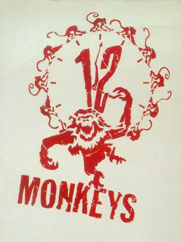
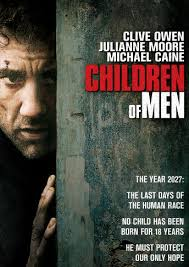

|  |
L'armée des 12 singesNous sommes en l'an 2035. Les quelques milliers d'habitants qui restent sur notre planète sont contraints de vivre sous terre. La surface du globe est devenue inhabitable à la suite d'un virus ayant décimé 99% de la population. Les survivants mettent tous leurs espoirs dans un voyage à travers le temps pour découvrir les causes de la catastrophe et la prévenir. C'est James Cole, hanté depuis des années par une image incompréhensible, qui est désigné pour cette mission. |
|  |
Children of MenDans une société futuriste où les êtres humains ne parviennent plus à se reproduire, l'annonce de la mort de la plus jeune personne, âgée de 18 ans, met la population en émoi. Au même moment, une femme tombe enceinte - un fait qui ne s'est pas produit depuis une vingtaine d'années - et devient par la même occasion la personne la plus enviée et la plus recherchée de la Terre. Un homme est chargé de sa protection... |
Le parapente |
|
Le Kitesurf |
Codé avec amour par Jérôme